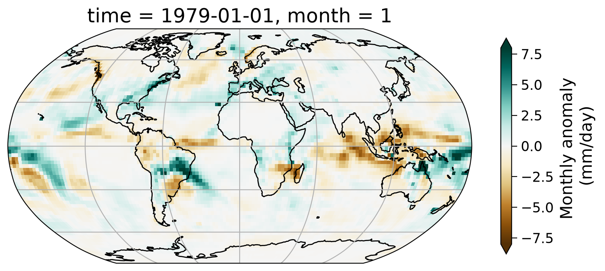
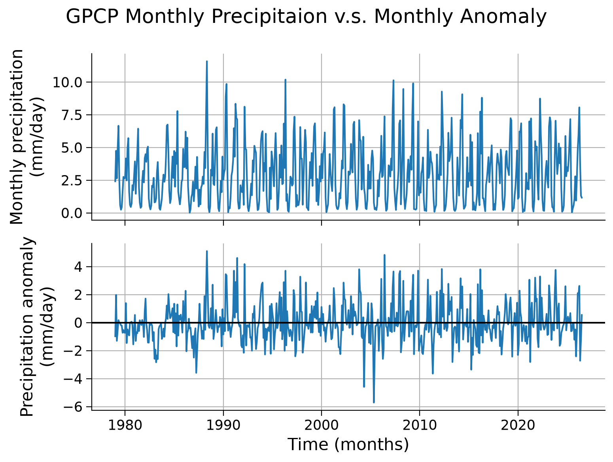
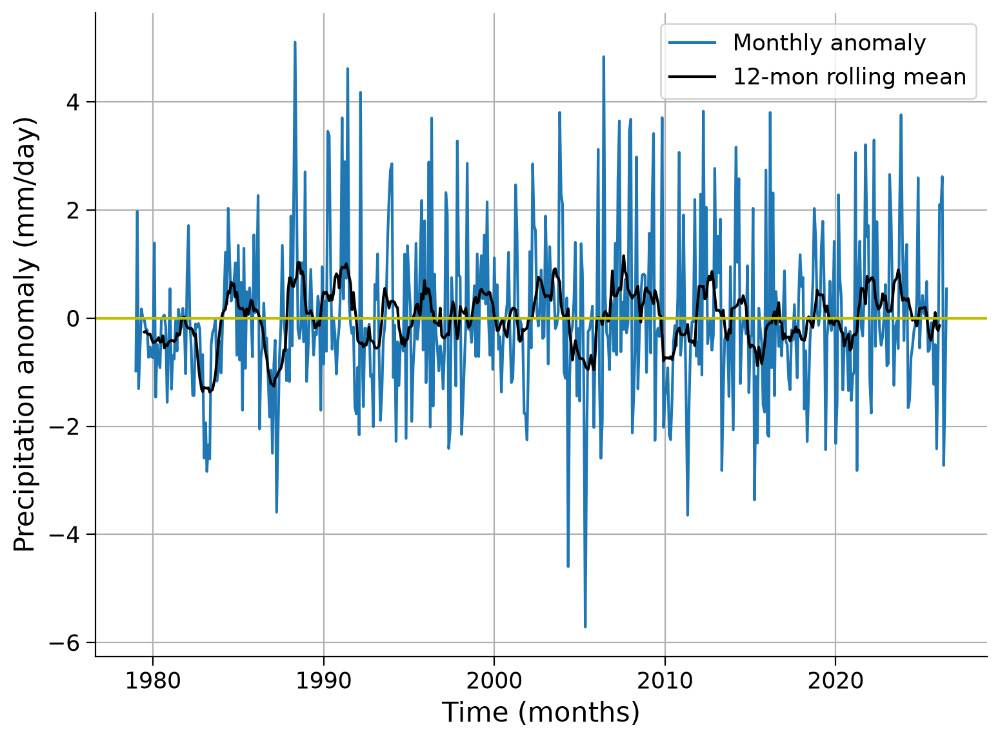
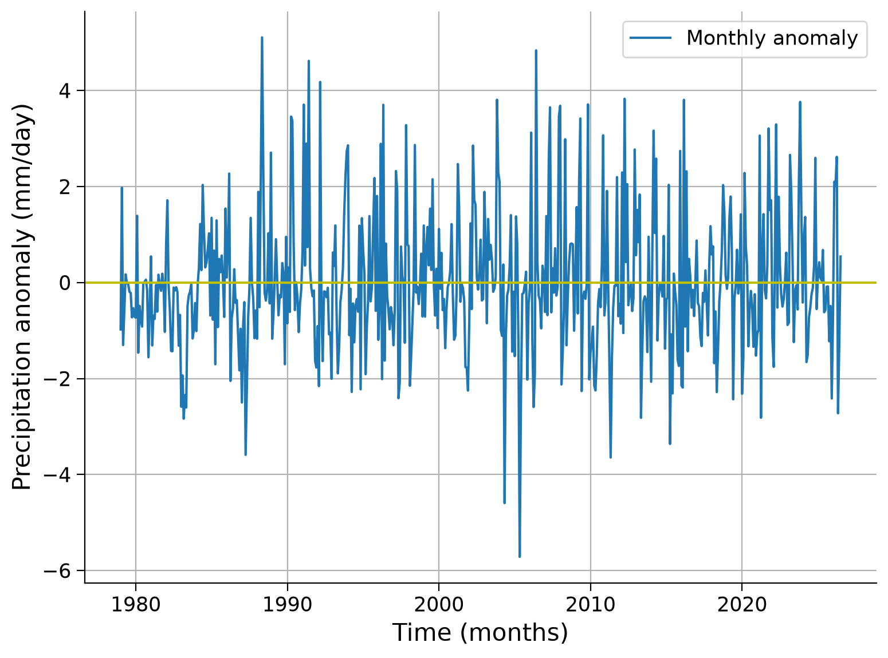
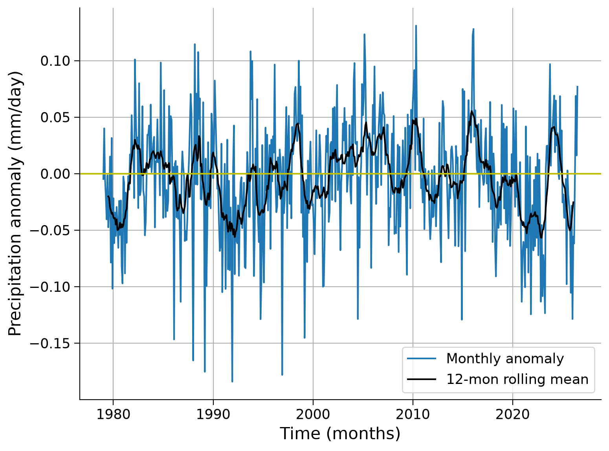
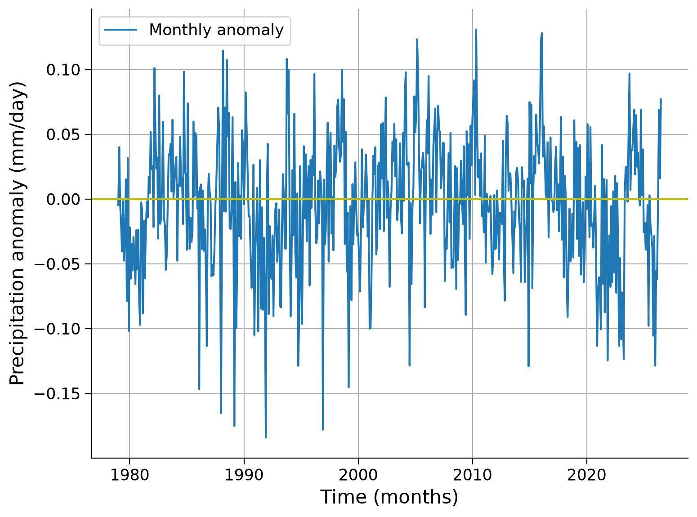

Tutorial 5: Calculating Anomalies Using Precipitation Data#
Week 1, Day 3, Remote Sensing
Content creators: Douglas Rao
Content reviewers: Katrina Dobson, Younkap Nina Duplex, Maria Gonzalez, Will Gregory, Nahid Hasan, Paul Heubel, Sherry Mi, Beatriz Cosenza Muralles, Jenna Pearson, Agustina Pesce, Chi Zhang, Ohad Zivan
Content editors: Paul Heubel, Jenna Pearson, Chi Zhang, Ohad Zivan
Production editors: Wesley Banfield, Paul Heubel, Jenna Pearson, Konstantine Tsafatinos, Chi Zhang, Ohad Zivan
Our 2024 Sponsors: CMIP, NFDI4Earth
Tutorial Objectives#
Estimated timing of tutorial: 25 minutes
In this tutorial, you will learn how to calculate climate anomalies using satellite climate data records.
By the end of this tutorial you will be able to:
Calculate an anomaly to a climatology.
Calculate the rolling mean of the anomaly data to smooth the time series and extract long-term signals/patterns.
Setup#
# installations ( uncomment and run this cell ONLY when using google colab or kaggle )
# !pip install s3fs --quiet
# # properly install cartopy in colab to avoid session crash
# !apt-get install libproj-dev proj-data proj-bin --quiet
# !apt-get install libgeos-dev --quiet
# !pip install cython --quiet
# !pip install cartopy --quiet
# !pip install geoviews
# !apt-get -qq install python-cartopy python3-cartopy --quiet
# !pip uninstall -y shapely --quiet
# !pip install shapely --no-binary shapely --quiet
# !pip install boto3 --quiet
# you may need to restart the runtime after running this cell and that is ok
# imports
import s3fs
import xarray as xr
import numpy as np
import matplotlib.pyplot as plt
import cartopy.crs as ccrs
import boto3
import botocore
import os
import pooch
import tempfile
import holoviews
from geoviews import Dataset as gvDataset
import geoviews.feature as gf
from geoviews import Image as gvImage
Install and import feedback gadget#
Show code cell source
# @title Install and import feedback gadget
!pip3 install vibecheck datatops --quiet
from vibecheck import DatatopsContentReviewContainer
def content_review(notebook_section: str):
return DatatopsContentReviewContainer(
"", # No text prompt
notebook_section,
{
"url": "https://pmyvdlilci.execute-api.us-east-1.amazonaws.com/klab",
"name": "comptools_4clim",
"user_key": "l5jpxuee",
},
).render()
feedback_prefix = "W1D3_T5"
Figure Settings#
Show code cell source
# @title Figure Settings
import ipywidgets as widgets # interactive display
%config InlineBackend.figure_format = 'retina'
plt.style.use(
"https://raw.githubusercontent.com/abodner/climate-course-content/main/cma.mplstyle"
)
Helper functions#
Show code cell source
# @title Helper functions
def pooch_load(filelocation=None, filename=None, processor=None):
shared_location = "/home/jovyan/shared/data/tutorials/W1D3_RemoteSensing" # this is different for each day
user_temp_cache = tempfile.gettempdir()
if os.path.exists(os.path.join(shared_location, filename)):
file = os.path.join(shared_location, filename)
else:
file = pooch.retrieve(
filelocation,
known_hash=None,
fname=os.path.join(user_temp_cache, filename),
processor=processor,
)
return file
Video 1: Calculating Anomaly#
Submit your feedback#
Show code cell source
# @title Submit your feedback
content_review(f"{feedback_prefix}_Calculating_Anomaly_Video")
If you want to download the slides: https://osf.io/download/kvdgr/
Submit your feedback#
Show code cell source
# @title Submit your feedback
content_review(f"{feedback_prefix}_Calculating_Anomaly_Slides")
Section 1: From Climatology to Anomaly#
Building upon your knowledge of climatology from the last tutorial, Tutorial 4, you will now calculate the anomalies from this climatology. An anomaly, in the context of climate studies, represents a departure from standard climatological conditions. For example, if the normal January temperature of the city that you live in is 10°C and the January temperature of this year is 15°C. We usually say the temperature anomaly of January this year is 5°C above normal/ the climatology. The anomaly is an essential tool in detecting changes in climate patterns and is frequently utilized in critical climate reports such as those generated by the Intergovernmental Panel on Climate Change (IPCC).
To calculate an anomaly, we first establish a reference period, usually a 30-year window, to define our climatology. In this process, it is crucial to use high-quality data and aggregate it to the desired spatial resolution and temporal frequency, such as weekly or monthly. The anomaly is then determined by subtracting this long-term average from a given observation, thus creating a useful metric for further climate analysis such as trend analysis.
In this tutorial, we will employ the GPCP monthly precipitation Climate Data Record (CDR) to compute a monthly anomaly time series. Furthermore, we will learn to calculate the rolling mean of the generated precipitation anomaly time series. This knowledge will be invaluable for our upcoming tutorial on climate variability.
Section 1.1: Calculating the Monthly Anomaly#
To calculate the anomaly, you first need to calculate the monthly climatology. Since you already learned how to do this during the last tutorial, we will fast-forward this step.
# connect to the AWS S3 bucket for the GPCP Monthly Precipitation CDR data
fs = s3fs.S3FileSystem(anon=True)
# get the list of all data files in the AWS S3 bucket
file_pattern = "noaa-cdr-precip-gpcp-monthly-pds/data/*/gpcp_v02r03_monthly_*.nc"
file_location = fs.glob(file_pattern)
# open connection to all data files
client = boto3.client(
"s3", config=botocore.client.Config(signature_version=botocore.UNSIGNED)
) # initialize aws s3 bucket client
file_ob = [
pooch_load(filelocation="http://s3.amazonaws.com/" + file, filename=file)
for file in file_location
]
# open all the monthly data files and concatenate them along the time dimension
# this process will take ~ 1 minute to complete due to the number of data files
ds = xr.open_mfdataset(file_ob, combine="nested", concat_dim="time")
# comment for colab users only: this could toss an error message for you.
# you should still be able to use the dataset with this error just not print ds
# you can try uncommenting the following line to avoid the error
# ds.attrs['history']='' # the history attribute have unique chars that cause a crash on Google colab.
ds
<xarray.Dataset> Size: 48MB
Dimensions: (latitude: 72, longitude: 144, time: 571, nv: 2)
Coordinates:
* latitude (latitude) float32 288B -88.75 -86.25 -83.75 ... 86.25 88.75
* longitude (longitude) float32 576B 1.25 3.75 6.25 ... 353.8 356.2 358.8
* time (time) datetime64[ns] 5kB 1979-01-01 1979-02-01 ... 2026-07-01
Dimensions without coordinates: nv
Data variables:
lat_bounds (time, latitude, nv) float32 329kB dask.array<chunksize=(1, 72, 2), meta=np.ndarray>
lon_bounds (time, longitude, nv) float32 658kB dask.array<chunksize=(1, 144, 2), meta=np.ndarray>
time_bounds (time, nv) datetime64[ns] 9kB dask.array<chunksize=(1, 2), meta=np.ndarray>
precip (time, latitude, longitude) float32 24MB dask.array<chunksize=(1, 72, 144), meta=np.ndarray>
precip_error (time, latitude, longitude) float32 24MB dask.array<chunksize=(1, 72, 144), meta=np.ndarray>
Attributes: (12/45)
Conventions: CF-1.6, ACDD 1.3
title: Global Precipitation Climatatology Project (G...
source: oc.197901.sg
references: Huffman et al. 1997, http://dx.doi.org/10.117...
history: 1) �R
`�, Dr. Jian-Jian Wang, U of Maryland,...
Metadata_Conventions: CF-1.6, Unidata Dataset Discovery v1.0, NOAA ...
... ...
metadata_link: gov.noaa.ncdc:C00979
product_version: v23rB1
platform: NOAA POES (Polar Orbiting Environmental Satel...
sensor: AVHRR>Advanced Very High Resolution Radiometer
spatial_resolution: 2.5 degree
comment: Processing computer: eagle2.umd.edu# calculate climatology using `.sel()` and `.groupby()` directly.
precip_clim = (
ds.precip.sel(time=slice("1981-01-01", "2010-12-01"))
.groupby("time.month")
.mean(dim="time")
)
precip_clim
<xarray.DataArray 'precip' (month: 12, latitude: 72, longitude: 144)> Size: 498kB
dask.array<transpose, shape=(12, 72, 144), dtype=float32, chunksize=(1, 72, 144), chunktype=numpy.ndarray>
Coordinates:
* latitude (latitude) float32 288B -88.75 -86.25 -83.75 ... 86.25 88.75
* longitude (longitude) float32 576B 1.25 3.75 6.25 ... 353.8 356.2 358.8
* month (month) int64 96B 1 2 3 4 5 6 7 8 9 10 11 12
Attributes:
long_name: NOAA Climate Data Record (CDR) of GPCP Monthly Satellite-...
standard_name: precipitation amount
units: mm/day
valid_range: [ 0. 100.]
cell_methods: area: mean time: meanNow we have the monthly precipitation climatology. How can we calculate the monthly anomaly?
As we learned before - let’s use .groupby() from xarray. We can split the entire time period based on the month of the year and then subtract the climatology of that specific month from the monthly value and recombine the value together.
# use `.groupby()` to calculate the monthly anomaly
precip_anom = ds.precip.groupby("time.month") - precip_clim
precip_anom
<xarray.DataArray 'precip' (time: 571, latitude: 72, longitude: 144)> Size: 24MB
dask.array<sub, shape=(571, 72, 144), dtype=float32, chunksize=(1, 72, 144), chunktype=numpy.ndarray>
Coordinates:
* latitude (latitude) float32 288B -88.75 -86.25 -83.75 ... 86.25 88.75
* longitude (longitude) float32 576B 1.25 3.75 6.25 ... 353.8 356.2 358.8
* time (time) datetime64[ns] 5kB 1979-01-01 1979-02-01 ... 2026-07-01
month (time) int64 5kB 1 2 3 4 5 6 7 8 9 10 ... 10 11 12 1 2 3 4 5 6 7You may have noticed that there is an additional coordinate in the anomaly dataset. The additional coordinate is month which is a direct outcome because of the .groupby() action we just performed.
If you want to save the data for future use, you can write the data out to a netCDF file using .to_netcdf(). It will automatically carry all the coordinates, dimensions, and relevant information into the netCDF file.
# an example of how to export the GPCP monthly anomaly data comparing to the climatology period of 1981-2010.
# precip_anom.to_netcdf('t5_gpcp-monthly-anomaly_1981-2010.nc')
Section 1.2: Examining the Anomaly#
First, let’s take a look at the geospatial pattern of the monthly anomaly of a selected month – January of 1979.
# initate plot
fig = plt.figure()
# set map projection
ax = plt.axes(projection=ccrs.Robinson())
# add coastal lines to indicate land/ocean
ax.coastlines()
# add grid lines for latitude and longitude
ax.gridlines()
# draw the precipitation data
precip_anom.sel(time="1979-01-01").plot(
ax=ax,
transform=ccrs.PlateCarree(),
vmin=-8,
vmax=8,
cmap="BrBG",
cbar_kwargs=dict(shrink=0.5, label="Monthly anomaly \n(mm/day)"),
)
<cartopy.mpl.geocollection.GeoQuadMesh at 0x7577c4d52250>

From the map of this monthly anomaly, we can see the spatial pattern of how precipitation for the January of 1979 has departed from the 30-year normal. Part of the Amazon saw notable increase of precipitation during this month as well as the northeast coast of the United States.
Interactive Demo 1.2#
In the interactive demo below (make sure to run the code) you will be able to scroll through the anomaly for a few months in 1979 to see how it changes from month to month during this year.
holoviews.extension("bokeh")
dataset_plot = gvDataset(
precip_anom.isel(time=slice(0, 10))
) # only the first 10, as it is a time consuming task
images = dataset_plot.to(gvImage, ["longitude", "latitude"], ["precip"], "time")
images.opts(
cmap="BrBG",
colorbar=True,
width=600,
height=400,
projection=ccrs.Robinson(),
clim=(-8, 8),
clabel="Monthly anomaly \n(mm/day)",
) * gf.coastline
![](data:image/png;base64,iVBORw0KGgoAAAANSUhEUgAAAEAAAABACAYAAACqaXHeAAAABHNCSVQICAgIfAhkiAAAAAlwSFlz
AAAB+wAAAfsBxc2miwAAABl0RVh0U29mdHdhcmUAd3d3Lmlua3NjYXBlLm9yZ5vuPBoAAA6zSURB
VHic7ZtpeFRVmsf/5966taWqUlUJ2UioBBJiIBAwCZtog9IOgjqACsogKtqirT2ttt069nQ/zDzt
tI4+CrJIREFaFgWhBXpUNhHZQoKBkIUASchWla1S+3ar7r1nPkDaCAnZKoQP/D7mnPOe9/xy76n3
nFSAW9ziFoPFNED2LLK5wcyBDObkb8ZkxuaoSYlI6ZcOKq1eWFdedqNzGHQBk9RMEwFAASkk0Xw3
ETacDNi2vtvc7L0ROdw0AjoSotQVkKSvHQz/wRO1lScGModBFbDMaNRN1A4tUBCS3lk7BWhQkgpD
lG4852/+7DWr1R3uHAZVQDsbh6ZPN7CyxUrCzJMRouusj0ipRwD2uKm0Zn5d2dFwzX1TCGhnmdGo
G62Nna+isiUqhkzuKrkQaJlPEv5mFl2fvGg2t/VnzkEV8F5ioioOEWkLG86fvbpthynjdhXYZziQ
x1hC9J2NFyi8vCTt91Fh04KGip0AaG9zuCk2wQCVyoNU3Hjezee9bq92duzzTmxsRJoy+jEZZZYo
GTKJ6SJngdJqAfRzpze0+jHreUtPc7gpBLQnIYK6BYp/uGhw9YK688eu7v95ysgshcg9qSLMo3JC
4jqLKQFBgdKDPoQ+Pltb8dUyQLpeDjeVgI6EgLIQFT5tEl3rn2losHVsexbZ3EyT9wE1uGdkIPcy
BGxn8QUq1QrA5nqW5i2tLqvrrM9NK6AdkVIvL9E9bZL/oyfMVd/jqvc8LylzRBKDJSzIExwhQzuL
QYGQj4rHfFTc8mUdu3E7yoLtbTe9gI4EqVgVkug2i5+uXGo919ixbRog+3fTbQ8qJe4ZOYNfMoTI
OoshUNosgO60AisX15aeI2PSIp5KiFLI9ubb1vV3Qb2ltwLakUCDAkWX7/nHKRmmGIl9VgYsUhJm
2NXjKYADtM1ygne9QQDIXlk49FBstMKx66D1v4+XuQr7vqTe0VcBHQlRWiOCbmmSYe2SqtL6q5rJ
zsTb7lKx3FKOYC4DoqyS/B5bvLPxvD9Qtf6saxYLQGJErmDOdOMr/zo96km1nElr8bmPOBwI9COv
HnFPRIwmkSOv9kcAS4heRsidOkpeWBgZM+UBrTFAXNYL5Vf2ii9c1trNzpYdaoVil3WIc+wdk+gQ
noie3ecCcxt9ITcLAPWt/laGEO/9U6PmzZkenTtsSMQ8uYywJVW+grCstAvCIaAdArAsIWkRDDs/
KzLm2YcjY1Lv0UdW73HabE9n6V66cxSzfEmuJssTpKGVp+0vHq73FwL46eOjpMpbRAnNmJFrGJNu
Ukf9Yrz+3rghiumCKNXXWPhLYcjxGsIpoCMsIRoFITkW8AuyM8jC1+/QLx4bozCEJIq38+1rtpR6
V/yzb8eBlRb3fo5l783N0CWolAzJHaVNzkrTzlEp2bQ2q3TC5gn6wpnoQAmwSiGh2GitnTmVMc5O
UyfKWUKCIsU7+fZDKwqdT6DDpvkzAX4/+AMFjk0tDp5GRXLpQ2MUmhgDp5gxQT8+Y7hyPsMi8uxF
71H0oebujHALECjFKaW9Lm68n18wXp2kVzIcABytD5iXFzg+WVXkegpAsOOYziqo0OkK76GyquC3
ltZAzMhhqlSNmmWTE5T6e3IN05ITFLM4GdN0vtZ3ob8Jh1NAKXFbm5PtLU/eqTSlGjkNAJjdgn/N
aedXa0tdi7+t9G0FIF49rtMSEgAs1kDLkTPO7ebm4IUWeyh1bKomXqlgMG6kJmHcSM0clYLJ8XtR
1GTnbV3F6I5wCGikAb402npp1h1s7LQUZZSMIfALFOuL3UUrfnS8+rez7v9qcold5tilgHbO1fjK
9ubb17u9oshxzMiUBKXWqJNxd+fqb0tLVs4lILFnK71H0Ind7uiPgACVcFJlrb0tV6DzxqqTIhUM
CwDf1/rrVhTa33/3pGPxJYdQ2l2cbgVcQSosdx8uqnDtbGjh9SlDVSMNWhlnilfqZk42Th2ZpLpf
xrHec5e815zrr0dfBZSwzkZfqsv+1FS1KUknUwPARVvItfKUY+cn57yP7qv07UE3p8B2uhUwLk09
e0SCOrK+hbdYHYLjRIl71wWzv9jpEoeOHhGRrJAzyEyNiJuUqX0g2sBN5kGK6y2Blp5M3lsB9Qh4
y2Ja6x6+i0ucmKgwMATwhSjdUu49tKrQ/pvN5d53ml2CGwCmJipmKjgmyuaXzNeL2a0AkQ01Th5j
2DktO3Jyk8f9vcOBQHV94OK+fPumJmvQHxJoWkaKWq9Vs+yUsbq0zGT1I4RgeH2b5wef7+c7bl8F
eKgoHVVZa8ZPEORzR6sT1BzDUAD/d9F78e2Tzv99v8D+fLVTqAKAsbGamKey1Mt9Ann4eH3gTXTz
idWtAJ8PQWOk7NzSeQn/OTHDuEikVF1R4z8BQCy+6D1aWRfY0tTGG2OM8rRoPaeIj5ZHzJxszElN
VM8K8JS5WOfv8mzRnQAKoEhmt8gyPM4lU9SmBK1MCQBnW4KONT86v1hZ1PbwSXPw4JWussVjtH9Y
NCoiL9UoH/6PSu8jFrfY2t36erQHXLIEakMi1SydmzB31h3GGXFDFNPaK8Rme9B79Ixrd0WN+1ij
NRQ/doRmuFLBkHSTOm5GruG+pFjFdAmorG4IXH1Qua6ASniclfFtDYt+oUjKipPrCQB7QBQ2lrgP
fFzm+9XWUtcqJ3/5vDLDpJ79XHZk3u8nGZ42qlj1+ydtbxysCezrydp6ugmipNJ7WBPB5tydY0jP
HaVNzs3QzeE4ZpTbI+ZbnSFPbVOw9vsfnVvqWnirPyCNGD08IlqtYkh2hjZ5dErEQzoNm+6ykyOt
Lt5/PQEuSRRKo22VkydK+vvS1XEKlhCJAnsqvcVvH7f/ZU2R67eXbMEGAMiIV5oWZWiWvz5Fv2xG
sjqNJQRvn3Rs2lji/lNP19VjAQDgD7FHhujZB9OGqYxRkZxixgRDVlqS6uEOFaJUVu0rPFzctrnF
JqijImVp8dEKVWyUXDk92zAuMZ6bFwpBU1HrOw6AdhQgUooChb0+ItMbWJitSo5Ws3IAOGEOtL53
0vHZih9sC4vtofZ7Qu6523V/fmGcds1TY3V36pUsBwAbSlxnVh2xLfAD/IAIMDf7XYIkNmXfpp2l
18rkAJAy9HKFaIr/qULkeQQKy9zf1JgDB2uaeFNGijo5QsUyacNUUTOnGO42xSnv4oOwpDi1zYkc
efUc3I5Gk6PhyTuVKaOGyLUAYPGIoY9Pu/atL/L92+4q9wbflRJ2Trpm/jPjdBtfnqB/dIThcl8A
KG7hbRuKnb8qsQsVvVlTrwQAQMUlf3kwJI24Z4JhPMtcfng5GcH49GsrxJpGvvHIaeem2ma+KSjQ
lIwUdYyCY8j4dE1KzijNnIP2llF2wcXNnsoapw9XxsgYAl6k+KzUXbi2yP3KR2ecf6z3BFsBICdW
nvnIaG3eHybqX7vbpEqUMT+9OL4Qpe8VON7dXuFd39v19FoAABRVePbGGuXTszO0P7tu6lghUonE
llRdrhArLvmKdh9u29jcFiRRkfLUxBiFNiqSU9icoZQHo5mYBI1MBgBH6wMNb+U7Pnw337H4gi1Y
ciWs+uks3Z9fztUvfzxTm9Ne8XXkvQLHNytOOZeiD4e0PgkAIAYCYknKUNUDSXEKzdWNpnil7r4p
xqkjTarZMtk/K8TQ6Qve78qqvXurGwIJqcOUKfUWHsm8KGvxSP68YudXq4pcj39X49uOK2X142O0
Tz5/u/7TVybqH0rSya6ZBwD21/gubbrgWdDgEOx9WUhfBaC2ibcEBYm7a7x+ukrBMNcEZggyR0TE
T8zUPjikQ4VosQZbTpS4vqizBKvqmvjsqnpfzaZyx9JPiz1/bfGKdgD45XB1zoIMzYbfTdS/NClB
Gct0USiY3YL/g0LHy/uq/Ef6uo5+n0R/vyhp17Klpge763f8rMu6YU/zrn2nml+2WtH+Z+5IAAFc
2bUTdTDOSNa9+cQY7YLsOIXhevEkCvzph7a8laecz/Un/z4/Ae04XeL3UQb57IwU9ZDr9UuKVajv
nxp1+1UVIo/LjztZkKH59fO3G/JemqCfmaCRqbqbd90ZZ8FfjtkfAyD0J/9+C2h1hDwsSxvGjNDc
b4zk5NfrSwiQblLHzZhg+Jf4aPlUwpDqkQqa9nimbt1/TDH8OitGMaQnj+RJS6B1fbF7SY1TqO5v
/v0WAADl1f7zokgS7s7VT2DZ7pegUjBM7mjtiDZbcN4j0YrHH0rXpCtY0qPX0cVL0rv5jv/ZXend
0u/EESYBAFBU4T4Qa5TflZOhTe7pmKpaP8kCVUVw1+yhXfJWvn1P3hnXi33JsTN6PnP3hHZ8Z3/h
aLHzmkNPuPj7Bc/F/Q38CwjTpSwQXgE4Vmwry9tpfq/ZFgqFMy4AVDtCvi8rvMvOmv0N4YwbVgEA
sPM72/KVnzfspmH7HQGCRLG2yL1+z8XwvPcdCbsAANh+xPzstgMtxeGKt+6MK3/tacfvwhWvIwMi
oKEBtm0H7W+UVfkc/Y1V0BhoPlDr/w1w/eu1vjIgAgDg22OtX6/eYfnEz/focrZTHAFR+PSs56/7
q32nwpjazxgwAQCwcU/T62t3WL7r6/jVRa6/byp1rei+Z98ZUAEAhEPHPc8fKnTU9nbgtnOe8h0l
9hcGIqmODLQAHCy2Xti6v/XNRivf43f4fFvIteu854+VHnR7q9tfBlwAAGz+pnndB9vM26UebAe8
SLHujPOTPVW+rwY+sxskAAC2HrA8t2Vvc7ffP1r9o+vwR2dcr92InIAbKKC1FZ5tB1tf+/G8p8sv
N/9Q5zd/XR34LYCwV5JdccMEAMDBk45DH243r/X4xGvqxFa/GNpS7n6rwOwNWwHVE26oAADYurf1
zx/utOzt+DMKYM0p17YtZZ5VNzqfsB2HewG1WXE8PoZ7gOclbTIvynZf9JV+fqZtfgs/8F/Nu5rB
EIBmJ+8QRMmpU7EzGRsf2FzuePqYRbzh/zE26EwdrT10f6r6o8HOYzCJB9Dpff8tbnGLG8L/A/WE
roTBs2RqAAAAAElFTkSuQmCC)
![]()
---------------------------------------------------------------------------
KeyError Traceback (most recent call last)
File ~/micromamba/envs/climatematch/lib/python3.11/site-packages/holoviews/core/dimension.py:1493, in Dimensioned._repr_mimebundle_(self, include, exclude)
1486 def _repr_mimebundle_(self, include=None, exclude=None):
1487 """Resolves the class hierarchy for the class rendering the
1488 object using any display hooks registered on Store.display
1489 hooks. The output of all registered display_hooks is then
1490 combined and returned.
1491
1492 """
-> 1493 return Store.render(self)
File ~/micromamba/envs/climatematch/lib/python3.11/site-packages/holoviews/core/options.py:1519, in Store.render(cls, obj)
1517 data, metadata = {}, {}
1518 for hook in hooks:
-> 1519 ret = hook(obj)
1520 if ret is None:
1521 continue
File ~/micromamba/envs/climatematch/lib/python3.11/site-packages/holoviews/ipython/display_hooks.py:330, in pprint_display(obj)
328 if not ip.display_formatter.formatters["text/plain"].pprint:
329 return None
--> 330 return display(obj, raw_output=True)
File ~/micromamba/envs/climatematch/lib/python3.11/site-packages/holoviews/ipython/display_hooks.py:304, in display(obj, raw_output, **kwargs)
302 elif isinstance(obj, (HoloMap, DynamicMap)):
303 with option_state(obj):
--> 304 output = map_display(obj)
305 elif isinstance(obj, Plot):
306 output = render(obj)
File ~/micromamba/envs/climatematch/lib/python3.11/site-packages/holoviews/ipython/display_hooks.py:193, in display_hook.<locals>.wrapped(element)
191 try:
192 max_frames = OutputSettings.options["max_frames"]
--> 193 mimebundle = fn(element, max_frames=max_frames)
194 if mimebundle is None:
195 return {}, {}
File ~/micromamba/envs/climatematch/lib/python3.11/site-packages/holoviews/ipython/display_hooks.py:246, in map_display(vmap, max_frames)
243 max_frame_warning(max_frames)
244 return None
--> 246 return render(vmap)
File ~/micromamba/envs/climatematch/lib/python3.11/site-packages/holoviews/ipython/display_hooks.py:62, in render(obj, **kwargs)
59 if renderer.fig == "pdf":
60 renderer = renderer.instance(fig="png")
---> 62 return renderer.components(obj, **kwargs)
File ~/micromamba/envs/climatematch/lib/python3.11/site-packages/holoviews/plotting/renderer.py:459, in Renderer.components(self, obj, fmt, comm, **kwargs)
457 embed = not (dynamic or streams or self.widget_mode == "live") or config.embed
458 if embed or config.comms == "default":
--> 459 return self._render_panel(plot, embed, comm)
460 return self._render_ipywidget(plot)
File ~/micromamba/envs/climatematch/lib/python3.11/site-packages/holoviews/plotting/renderer.py:466, in Renderer._render_panel(self, plot, embed, comm)
464 doc = Document()
465 with config.set(embed=embed):
--> 466 model = plot.layout._render_model(doc, comm)
467 if embed:
468 return render_model(model, comm)
File ~/micromamba/envs/climatematch/lib/python3.11/site-packages/panel/viewable.py:803, in Viewable._render_model(self, doc, comm)
801 if comm is None:
802 comm = state._comm_manager.get_server_comm()
--> 803 model = self.get_root(doc, comm)
805 if self._design and self._design.theme.bokeh_theme:
806 doc.theme = self._design.theme.bokeh_theme
File ~/micromamba/envs/climatematch/lib/python3.11/site-packages/panel/layout/base.py:386, in Panel.get_root(self, doc, comm, preprocess)
382 def get_root(
383 self, doc: Document | None = None, comm: Comm | None = None,
384 preprocess: bool = True
385 ) -> Model:
--> 386 root = super().get_root(doc, comm, preprocess)
387 # ALERT: Find a better way to handle this
388 if hasattr(root, 'styles') and 'overflow-x' in root.styles:
File ~/micromamba/envs/climatematch/lib/python3.11/site-packages/panel/viewable.py:733, in Renderable.get_root(self, doc, comm, preprocess)
731 wrapper = self._design._wrapper(self)
732 if wrapper is self:
--> 733 root = self._get_model(doc, comm=comm)
734 if preprocess:
735 self._preprocess(root)
File ~/micromamba/envs/climatematch/lib/python3.11/site-packages/panel/layout/base.py:370, in Panel._get_model(self, doc, root, parent, comm)
368 root = root or model
369 self._models[root.ref['id']] = (model, parent)
--> 370 objects, _ = self._get_objects(model, [], doc, root, comm)
371 props = self._get_properties(doc)
372 props[self._property_mapping['objects']] = objects
File ~/micromamba/envs/climatematch/lib/python3.11/site-packages/panel/layout/base.py:352, in Panel._get_objects(self, model, old_objects, doc, root, comm)
350 else:
351 try:
--> 352 child = pane._get_model(doc, root, model, comm)
353 except RerenderError as e:
354 if e.layout is not None and e.layout is not self:
File ~/micromamba/envs/climatematch/lib/python3.11/site-packages/panel/pane/holoviews.py:494, in HoloViews._get_model(self, doc, root, parent, comm)
492 plot = self.object
493 else:
--> 494 plot = self._render(doc, comm, root)
496 plot.pane = self
497 backend = plot.renderer.backend
File ~/micromamba/envs/climatematch/lib/python3.11/site-packages/panel/pane/holoviews.py:588, in HoloViews._render(self, doc, comm, root)
585 if comm:
586 kwargs['comm'] = comm
--> 588 return renderer.get_plot(self.object, **kwargs)
File ~/micromamba/envs/climatematch/lib/python3.11/site-packages/holoviews/plotting/bokeh/renderer.py:77, in BokehRenderer.get_plot(self_or_cls, obj, doc, renderer, **kwargs)
70 @bothmethod
71 def get_plot(self_or_cls, obj, doc=None, renderer=None, **kwargs):
72 """Given a HoloViews Viewable return a corresponding plot instance.
73 Allows supplying a document attach the plot to, useful when
74 combining the bokeh model with another plot.
75
76 """
---> 77 plot = super().get_plot(obj, doc, renderer, **kwargs)
78 if plot.document is None:
79 plot.document = Document() if self_or_cls.notebook_context else curdoc()
File ~/micromamba/envs/climatematch/lib/python3.11/site-packages/holoviews/plotting/renderer.py:300, in Renderer.get_plot(self_or_cls, obj, doc, renderer, comm, **kwargs)
296 defaults = [kd.default for kd in plot.dimensions]
297 init_key = tuple(
298 v if d is None else d for v, d in zip(plot.keys[0], defaults, strict=None)
299 )
--> 300 plot.update(init_key)
301 else:
302 plot = obj
File ~/micromamba/envs/climatematch/lib/python3.11/site-packages/holoviews/plotting/plot.py:1087, in DimensionedPlot.update(self, key)
1085 if len(self) == 1 and key in (0, self.keys[0]) and not self.drawn:
1086 return self.initialize_plot()
-> 1087 item = self.__getitem__(key)
1088 self.traverse(lambda x: setattr(x, "_updated", True))
1089 return item
File ~/micromamba/envs/climatematch/lib/python3.11/site-packages/holoviews/plotting/plot.py:503, in DimensionedPlot.__getitem__(self, frame)
501 self.param.warning(f"Showing last frame available: {len(self)}")
502 if not self.drawn:
--> 503 self.handles["fig"] = self.initialize_plot()
504 if not isinstance(frame, tuple):
505 frame = self.keys[frame]
File ~/micromamba/envs/climatematch/lib/python3.11/site-packages/geoviews/plotting/bokeh/plot.py:121, in GeoPlot.initialize_plot(self, ranges, plot, plots, source)
119 def initialize_plot(self, ranges=None, plot=None, plots=None, source=None):
120 opts = {} if isinstance(self, HvOverlayPlot) else {'source': source}
--> 121 fig = super().initialize_plot(ranges, plot, plots, **opts)
122 style_element = self.current_frame.last if self.batched else self.current_frame
123 el_ranges = match_spec(style_element, self.current_ranges) if self.current_ranges else {}
File ~/micromamba/envs/climatematch/lib/python3.11/site-packages/holoviews/plotting/bokeh/element.py:3906, in OverlayPlot.initialize_plot(self, ranges, plot, plots)
3904 self.tabs = self.tabs or any(isinstance(sp, TablePlot) for sp in self.subplots.values())
3905 if plot is None and not self.tabs and not self.batched:
-> 3906 plot = self._init_plot(key, element, ranges=ranges, plots=plots)
3907 self._populate_axis_handles(plot)
3908 self.handles["plot"] = plot
File ~/micromamba/envs/climatematch/lib/python3.11/site-packages/holoviews/plotting/bokeh/element.py:1150, in ElementPlot._init_plot(self, key, element, plots, ranges)
1146 subplots = list(self.subplots.values()) if self.subplots else []
1148 axis_specs = {"x": {}, "y": {}}
1149 axis_specs["x"]["x"] = (
-> 1150 *self._axis_props(plots, subplots, element, ranges, pos=0),
1151 self.xaxis,
1152 {},
1153 )
1154 if self.multi_y and subplots:
1155 if not BOKEH_GE_3_2_0:
File ~/micromamba/envs/climatematch/lib/python3.11/site-packages/holoviews/plotting/bokeh/element.py:936, in ElementPlot._axis_props(self, plots, subplots, element, ranges, pos, dim, range_tags_extras, extra_range_name)
934 else:
935 try:
--> 936 l, b, r, t = self.get_extents(range_el, ranges, dimension=dim)
937 except TypeError:
938 # Backward compatibility for e.g. GeoViews=<1.10.1 since dimension
939 # is a newly added keyword argument in HoloViews 1.17
940 l, b, r, t = self.get_extents(range_el, ranges)
File ~/micromamba/envs/climatematch/lib/python3.11/site-packages/geoviews/plotting/plot.py:64, in ProjectionPlot.get_extents(self, element, ranges, range_type, **kwargs)
62 (x0, x1), (y0, y1) = proj.x_limits, proj.y_limits
63 return (x0, y0, x1, y1)
---> 64 extents = super().get_extents(element, ranges, range_type)
65 if not getattr(element, 'crs', None) or not self.geographic:
66 return extents
File ~/micromamba/envs/climatematch/lib/python3.11/site-packages/holoviews/plotting/plot.py:2285, in GenericOverlayPlot.get_extents(self, overlay, ranges, range_type, dimension, **kwargs)
2284 def get_extents(self, overlay, ranges, range_type="combined", dimension=None, **kwargs):
-> 2285 subplot_extents = self._get_subplot_extents(overlay, ranges, range_type, dimension)
2286 zrange = isinstance(self.projection, str) and self.projection == "3d"
2287 extents = {k: util.max_extents(rs, zrange) for k, rs in subplot_extents.items()}
File ~/micromamba/envs/climatematch/lib/python3.11/site-packages/holoviews/plotting/plot.py:2280, in GenericOverlayPlot._get_subplot_extents(self, overlay, ranges, range_type, dimension)
2278 sp_ranges = util.match_spec(layer, ranges) if ranges else {}
2279 for rt in extents:
-> 2280 extent = subplot.get_extents(layer, sp_ranges, range_type=rt)
2281 extents[rt].append(extent)
2282 return extents
File ~/micromamba/envs/climatematch/lib/python3.11/site-packages/geoviews/plotting/plot.py:70, in ProjectionPlot.get_extents(self, element, ranges, range_type, **kwargs)
68 extents = None
69 else:
---> 70 extents = project_extents(extents, element.crs, proj)
71 return (np.nan,)*4 if not extents else extents
File ~/micromamba/envs/climatematch/lib/python3.11/site-packages/geoviews/util.py:72, in project_extents(extents, src_proj, dest_proj, tol)
67 def project_extents(extents, src_proj, dest_proj, tol=1e-6):
68 x1, y1, x2, y2 = extents
70 if (isinstance(src_proj, ccrs.PlateCarree) and
71 not isinstance(dest_proj, ccrs.PlateCarree) and
---> 72 src_proj.proj4_params['lon_0'] != 0):
73 xoffset = src_proj.proj4_params['lon_0']
74 x1 = x1 - xoffset
KeyError: 'lon_0'
:HoloMap [time]
:Overlay
.Image.I :Image [longitude,latitude] (precip)
.Coastline.I :Feature [Longitude,Latitude]
To visualize the changes in the precipitation anomaly over many months, we can also take a look at the time series of a selected grid. We will use the same point (0°N, 0°E) that we used as an example in the last tutorial.
# set up two subplots that share the x-axis to compare monthly precipitation and monthly anomaly
fig, axs = plt.subplots(2, sharex=True)
# draw monthly precipitation
axs[0].plot(ds.time, ds.precip.sel(latitude=0, longitude=0, method="nearest"))
# set title and y-label
fig.suptitle("GPCP Monthly Precipitaion v.s. Monthly Anomaly")
axs[0].set_ylabel("Monthly precipitation\n(mm/day)")
# draw anomaly
axs[1].plot(
precip_anom.time, precip_anom.sel(latitude=0, longitude=0, method="nearest")
)
# aesthetics
axs[1].set_xlabel("Time (months)")
axs[1].set_ylabel("Precipitation anomaly\n(mm/day)")
# add horizontal line of y=0 for the anomaly subplot
axs[1].axhline(y=0, color="k", linestyle="-")
# add grids
_ = [ax.grid(True) for ax in axs]

Note that, unlike the upper panel showing precipitation values, the lower panel displaying the monthly anomaly does not exhibit distinct seasonal cycles. This discrepancy highlights one of the advantages of utilizing anomaly data for climate analysis. By removing the repetitive patterns induced by seasonality or other stable factors, we can effectively isolate the specific signals in the data that are of interest, such as climate variability or climate trends. This approach allows for a clearer focus on the desired climate-related patterns without the interference of predictable seasonal variations.
Section 2: Anomaly Analysis#
In this section, we are going to explore a few different analyses of the anomaly data:
Calculating the rolling mean
Calculating the global mean
You have already practiced using these tools during the last two days or material, here we will focus on applying them to a much longer satellite data record than you have encountered previously.
Section 2.1: Rolling Mean#
The monthly anomaly time series often contains noisy data that may obscure the patterns associated with large-scale climate variability. To mitigate this noise and enhance the visibility of underlying patterns, we can apply a rolling mean technique using the .rolling() method. This approach involves smoothing the monthly time series to facilitate the identification of climate variability.
# calculate 12-month rolling mean for the selected location, add in .compute() at the end if using Google Colab if it throws an error
grid_month = precip_anom.sel(latitude=0, longitude=0, method="nearest")
grid_rolling = grid_month.rolling(time=12, center=True).mean()
# create the time series plot of monthly anomaly
fig, ax = plt.subplots()
grid_month.plot(label="Monthly anomaly", ax=ax)
grid_rolling.plot(color="k", label="12-mon rolling mean", ax=ax)
# aesthetics
ax.axhline(y=0, color="y", linestyle="-")
ax.set_xlabel("Time (months)")
ax.set_ylabel("Precipitation anomaly (mm/day)")
ax.legend()
ax.set_title("") # remove the automatically generated title
ax.grid(True)

As you can see, the 12-month rolling mean removes the high-frequency variations of monthly precipitation anomaly data, allowing the slower-changing patterns of precipitation to become more apparent.
Coding Exercises 2.1#
Calculate the 24-month rolling mean for the same grid and compare the three different time series (monthly anomaly, 12-month rolling mean, 24-month rolling mean).
# calculate 24-month rolling mean
grid_rolling_24m = ...
# plot all three time series together with different colors
fig, ax = plt.subplots()
_ = grid_month.plot(label="Monthly anomaly", ax=ax)
_ = ...
_ = ...
# aesthetics
ax.axhline(y=0, color="y", linestyle="-")
ax.set_xlabel("Time (months)")
ax.set_ylabel("Precipitation anomaly (mm/day)")
ax.legend()
ax.set_title("") # remove the automatically generated title
ax.grid(True)

Example output:

Submit your feedback#
Show code cell source
# @title Submit your feedback
content_review(f"{feedback_prefix}_Coding_Exercise_2_1")
Questions 2.1#
What are the major differences you notice between the 12 and 24 month rolling averages?
What would generally dictate the window size to use in a rolling average of a satellite derived climate variable such as precipitation anomalies?
Submit your feedback#
Show code cell source
# @title Submit your feedback
content_review(f"{feedback_prefix}_Questions_2_1")
Section 2.2: Global Mean#
When examining global-scale changes, it is common to aggregate global mean values from all grid cells. However, it is important to note that despite each grid having the same resolution of 2.5°×2.5°, they represent different areas on the Earth’s surface. Specifically, the same grid covers larger spatial areas in the tropics compared to the polar regions as discussed in the climate system overview day (W1D1).
To address this issue, it is necessary to weigh the values based on their respective surface areas. Unlike the model data you used previously, where you had the grid cell area available as a variable, for our gridded observations we will use weights based on the cosine of the latitude as this function takes into account the decreasing area towards the poles.
# calculate the weights using the latitude coordinates
weights = np.cos(np.deg2rad(precip_anom.latitude))
weights.name = "weights"
weights
<xarray.DataArray 'weights' (latitude: 72)> Size: 288B
array([0.02181496, 0.06540319, 0.10886693, 0.15212344, 0.19509035,
0.23768592, 0.27982906, 0.32143947, 0.36243805, 0.4027467 ,
0.4422887 , 0.48098874, 0.5187732 , 0.55557024, 0.59130967,
0.62592345, 0.6593458 , 0.691513 , 0.72236395, 0.7518398 ,
0.77988446, 0.8064446 , 0.8314696 , 0.85491186, 0.87672675,
0.89687276, 0.91531146, 0.93200785, 0.9469301 , 0.96004987,
0.9713421 , 0.98078525, 0.98836154, 0.99405634, 0.99785894,
0.999762 , 0.999762 , 0.99785894, 0.99405634, 0.98836154,
0.98078525, 0.9713421 , 0.96004987, 0.9469301 , 0.93200785,
0.91531146, 0.89687276, 0.87672675, 0.85491186, 0.8314696 ,
0.8064446 , 0.77988446, 0.7518398 , 0.72236395, 0.691513 ,
0.6593458 , 0.62592345, 0.59130967, 0.55557024, 0.5187732 ,
0.48098874, 0.4422887 , 0.4027467 , 0.36243805, 0.32143947,
0.27982906, 0.23768592, 0.19509035, 0.15212344, 0.10886693,
0.06540319, 0.02181496], dtype=float32)
Coordinates:
* latitude (latitude) float32 288B -88.75 -86.25 -83.75 ... 83.75 86.25 88.75
Attributes:
long_name: Latitude
standard_name: latitude
units: degrees_north
valid_range: [-90. 90.]
axis: Y
bounds: lat_bounds# calculate weighted global monthly mean, add .compute() if using Google Colab and it throws an error
anom_weighted = precip_anom.weighted(weights)
global_weighted_mean = anom_weighted.mean(("latitude", "longitude"))
global_weighted_mean
<xarray.DataArray 'precip' (time: 571)> Size: 2kB
dask.array<truediv, shape=(571,), dtype=float32, chunksize=(1,), chunktype=numpy.ndarray>
Coordinates:
* time (time) datetime64[ns] 5kB 1979-01-01 1979-02-01 ... 2026-07-01
month (time) int64 5kB 1 2 3 4 5 6 7 8 9 10 11 ... 10 11 12 1 2 3 4 5 6 7# create the time series plot of global weighted monthly anomaly
fig, ax = plt.subplots()
global_weighted_mean.plot(label="Monthly anomaly", ax=ax)
global_weighted_mean.rolling(time=12, center=True).mean(("latitude", "longitude")).plot(
color="k", label="12-mon rolling mean", ax=ax
)
ax.axhline(y=0, color="y", linestyle="-")
ax.set_xlabel("Time (months)")
ax.set_ylabel("Precipitation anomaly (mm/day)")
ax.legend()
ax.grid(True)

Coding Exercises 2.2#
Plot the 12-month rolling average of the difference between the global weighted and unweighted mean time series.
# calculate unweighted global mean
global_unweighted_mean = ...
# calculate the difference between weighted and unweighted global mean
global_diff = ...
# plot the time series of the difference
fig, ax = plt.subplots()
_ = global_weighted_mean.plot(label="Monthly anomaly", ax=ax)
_ = ...
# aesthetics
ax.axhline(y=0, color="y", linestyle="-")
ax.set_xlabel("Time (months)")
ax.set_ylabel("Precipitation anomaly (mm/day)")
ax.legend()
ax.grid(True)

Example output:

Submit your feedback#
Show code cell source
# @title Submit your feedback
content_review(f"{feedback_prefix}_Coding_Exercise_2_2")
Questions 2.2#
Give one example of why the weighted mean might be higher than the unweighted mean, as in the 2000-2004 period.
Submit your feedback#
Show code cell source
# @title Submit your feedback
content_review(f"{feedback_prefix}_Questions_2_2")
Summary#
In this tutorial, you learned how to calculate a climate anomaly using satellite-derived precipitation data.
The anomaly allows us to look at the signals that may be covered by the seasonal cycle pattern (e.g., temperature/precipitation seasonal cycle).
The anomaly data can be further smoothed using the rolling mean to reveal longer-term signals at an annual or decade time scale.
We will use the anomaly concept to study climate variability in the next tutorial.
Resources#
Data from this tutorial can be accessed here.